TokenEconomizer는 무엇이고 얼마나 줄였나
토큰을 아끼는 도구는 이미 많아요. 영상이 먼저 꺼낸 비교 대상은 Graft예요. Graft 같은 도구는 일을 시작하기 전에 프로젝트 파일 지도를 만들어 두고, 에이전트가 파일을 헤매며 찾느라 토큰을 쓰지 않게 해요. 아래 화면은 '결제 페이지 찾기'를 지도 없이 할 때와 지도를 두고 할 때를 나란히 놓았어요. 왼쪽은 14,690토큰, 오른쪽은 1,240토큰이에요.
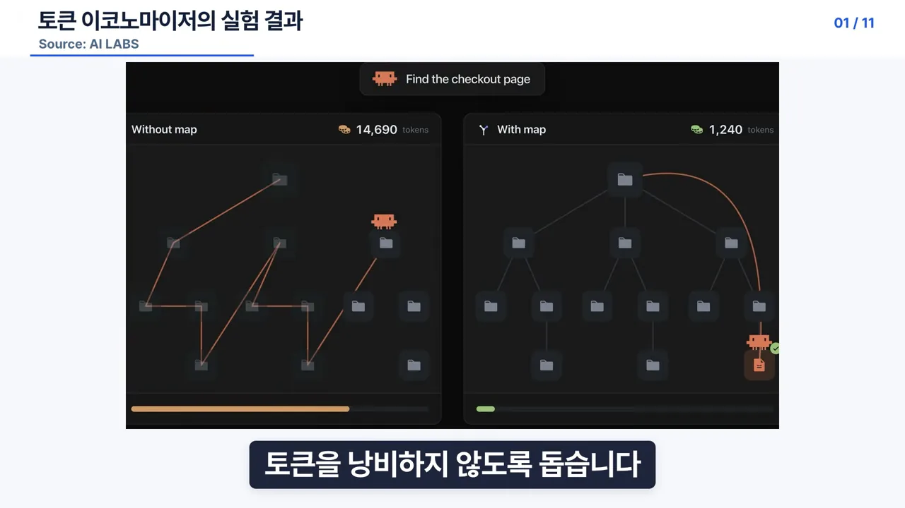
TokenEconomizer는 지도를 만들지 않고 내가 일하는 방식을 보고 배워요. 세션마다 에이전트가 실행한 명령을 지켜보다가 어디서 토큰이 새는지 기록하고, 다음 세션부터 그 낭비를 잘라 내요. 같은 프로젝트를 오래 쓸수록 싸지는 구조예요.
마이크로소프트가 공개한 실험
마이크로소프트는 실험 결과와 데이터를 깃허브 저장소에 함께 공개했어요. 화면에 비친 README의 Results 단락을 보면, 여섯 개 저장소의 SWE-Bench 과제 277개를 다섯 가지 에이전트·모델 조합으로 돌렸고, 저장소마다 과제를 차례로, 아무것도 배우지 않은 상태에서 시작했다고 적혀 있어요.
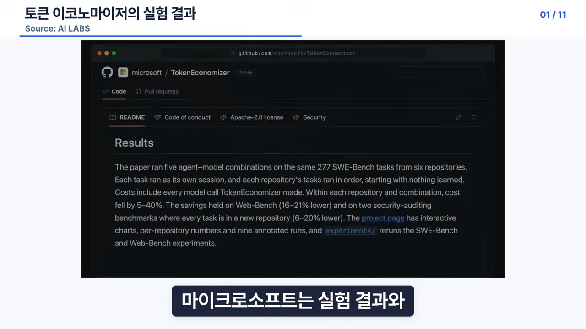
과제는 깃허브의 실제 프로젝트에서 나온 실제 버그예요. 아래 화면 왼쪽에 django, matplotlib, scikit-learn, sphinx, sympy, xarray 여섯 프로젝트가 있고, 오른쪽 카드에 지금 가리키는 프로젝트의 버그 수(40)가 떠 있어요. 에이전트는 프로젝트마다 버그를 하나씩 이어서 고쳤어요.
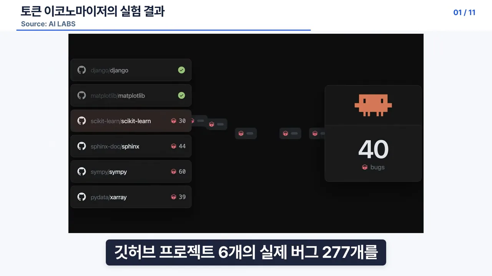
설정은 Claude Code, Codex, GitHub Copilot에 걸친 다섯 가지였고, 모든 설정에서 도구를 쓴 쪽이 쌌어요. 영상이 콕 집은 건 Claude Code 숫자예요. 과제당 비용이 Sonnet 5는 23.6%, Opus 4.8은 30.9% 줄었어요.
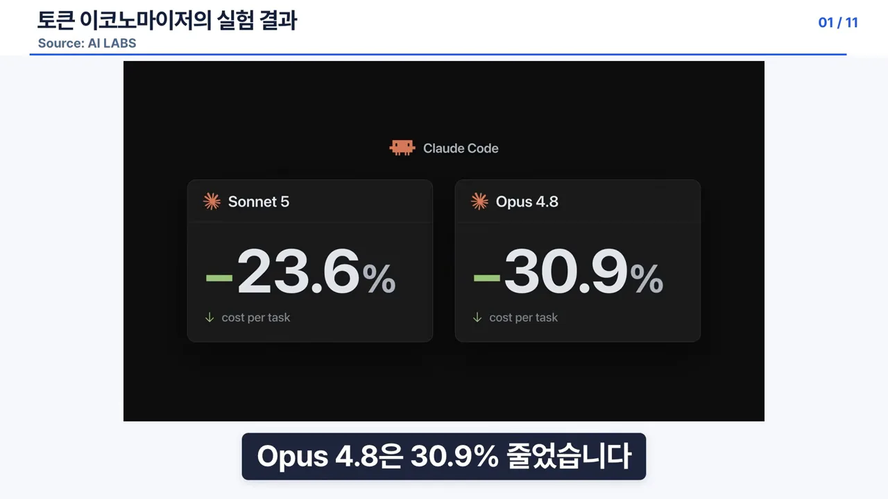
토큰이 새는 곳과 세 가지 장치
이 도구가 무엇을 줄이는지 보려면, 먼저 토큰이 어디에 쓰이는지 알아야 해요. 에이전트에 메시지를 보낼 때마다 모델로 요청이 하나 나가요. 그런데 이 요청에는 내 프롬프트만 실리지 않아요. 모델은 스스로 기억하지 못하니까 프로젝트에 관한 맥락을 매번 같이 보내야 하거든요.
아래 화면의 Request 상자가 그 내용물이에요. 위에서부터 Instructions(에이전트가 늘 따르는 지침), Tools(쓸 수 있는 모든 도구 목록), MCP(Model Context Protocol) tools, Skills, 그리고 Conversation(지금까지의 대화)이 쌓여 있어요. 오른쪽 세로 막대가 그만큼 차오르는 토큰이에요.
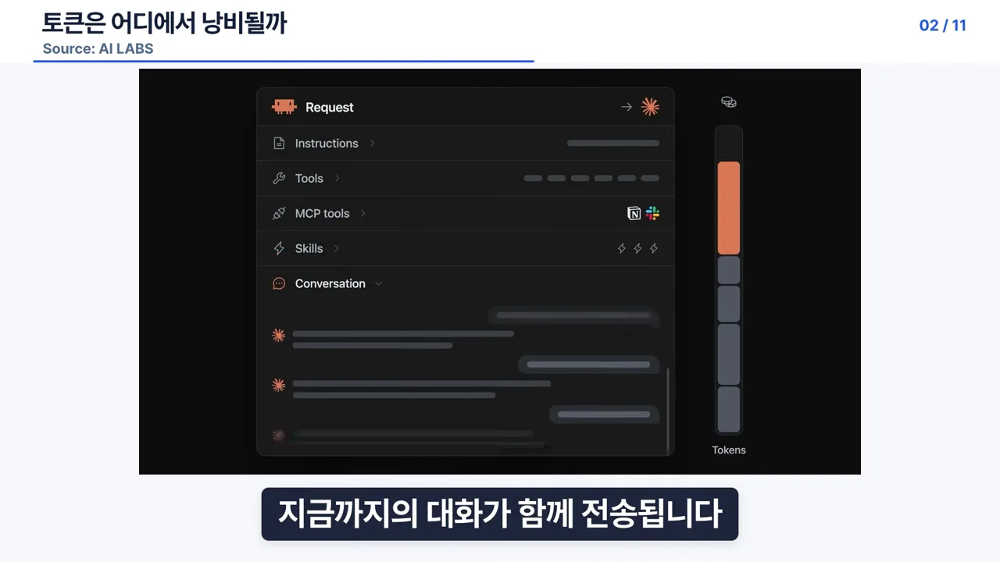
같은 프로젝트에서 계속 일하다 보면 이 중 상당수가 모델에게 필요 없는 짐이 돼요. 여기에 두 가지 낭비가 더 붙어요. 한 세션에서 고친 실수를 다음 세션에서 또 실패하며 다시 배우는 것, 그리고 한 번도 안 쓰는 도구를 계속 들고 다니는 것이에요. 아래 화면에는 Monitor, EnterWorktree, WebSearch, CronCreate, ScheduleWakeup, NotebookEdit 같은 도구 열 개가 '10 unused'로 묶여 끌려가고 있어요.
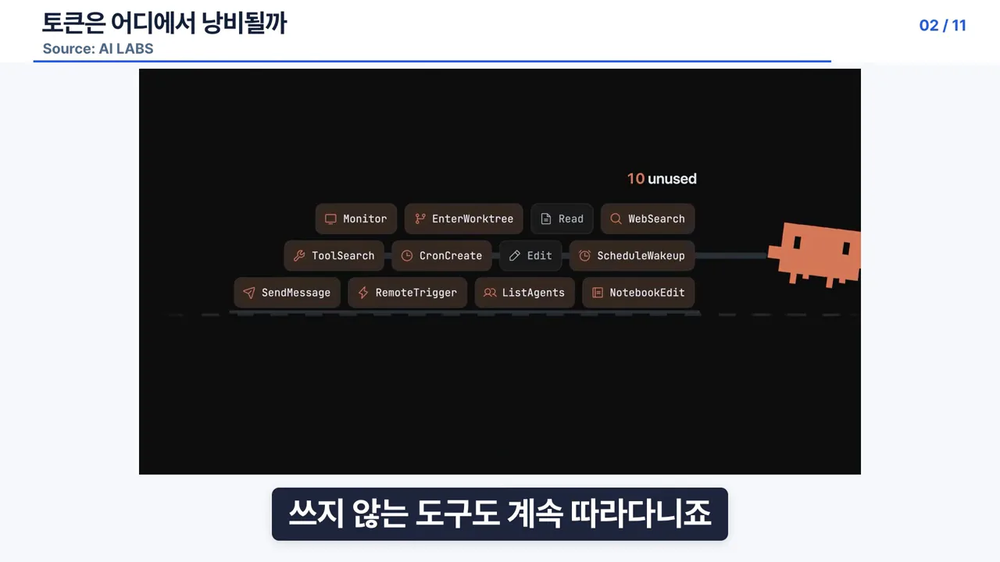
TokenEconomizer는 그 프로젝트에서 열었던 세션을 지켜보며 세 가지를 고쳐요. 정리하면 이래요.
| 낭비 | 장치 | 하는 일 |
|---|---|---|
| 같은 실수를 세션마다 반복 | 마이크로스킬 | 반복되는 실수를 프로젝트 사실로 적고, 새 세션 시작 때 건네요 |
| 안 쓰는 도구를 매번 전송 | 도구 정리(toolprune) | 두 세션 이상, 메시지 10개 동안 안 쓴 도구를 그 프로젝트에서 꺼요 |
| 막힌 채 같은 시도를 반복 | 막힘 감지 | 모델이 막혔다고 판단하면 한 번만 다른 방법을 권해요 |
하나, 반복 실수를 기억하는 마이크로스킬
Claude는 한 세션에서 무엇이 됐고 무엇이 안 됐는지를 다음 세션까지 기억하지 못해요. 아래 화면의 Session 1에서는 'run the tests'를 받고 npm test를 돌렸다가 'Missing script: "test"' 오류를 만나요. 아래 작은 카드가 그 교훈이에요. npm test에는 빨간 표시, 'no test script'에는 초록 표시예요.
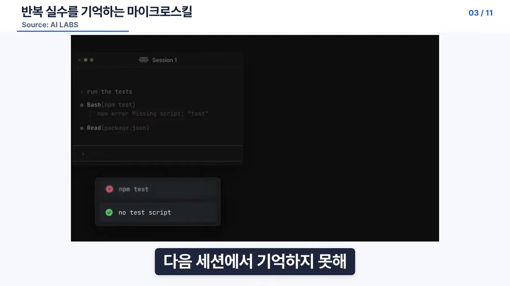
npm test부터 실패해요. 영상 02:46에서 보기도구는 같은 실수가 여러 번 보이면 그걸 프로젝트에 관한 '사실'로 적어요. 이 사실을 마이크로스킬이라고 불러요. 아래 화면 왼쪽 micro-skill 카드에 'npm test doesn't work here'가 적혀 있고, 오른쪽 세 세션에 초록 체크가 붙어 있어요. 몇 세션에서 맞다고 확인되면 그 프로젝트용으로 저장하고, 새 세션을 열 때마다 에이전트에게 이미 아는 사실로 건네요.
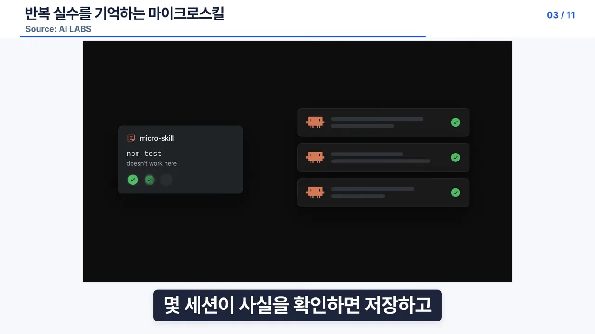
둘, 쓰지 않는 도구를 끄기
Claude Code는 세션마다 도구를 잔뜩 불러와요. 그중 하나가 최소 두 세션에 걸친 메시지 10개 동안 한 번도 쓰이지 않으면, 도구는 그 프로젝트에서 그걸 꺼요. 아래 화면의 TokenEconomizer 카드가 이 기준을 그대로 보여 줘요. CronCreate의 스위치가 꺼졌고, Messages 칸 10개와 Sessions 칸 2개가 다 찼어요.
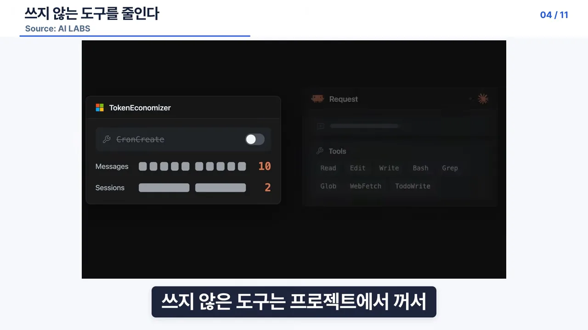
마이크로소프트 수치로는 이 장치가 가장 많이 아껴요. 매 턴 보내는 도구 수 자체를 줄이니까요. 영상은 대신 '묻지 않고 끈다'는 점을 짚어요. 컨텍스트 윈도우에서 도구가 빠져도 사용자는 모를 수 있다는 거예요. 아래 화면 왼쪽 'what you see'에는 'add a login page'만 보이지만, 오른쪽 'what's sent'의 tools에는 Read, Edit, Write, Bash, mcp__notion__notion-fetch, Grep, Glob만 남아 있어요. 오른쪽 위 파란 띠는 Tech Bridge가 붙인 메모로, '공식 문서(11/2 기준)에는 동작할 때 한 줄로 알린다고 적혀 있다'는 뜻이에요.
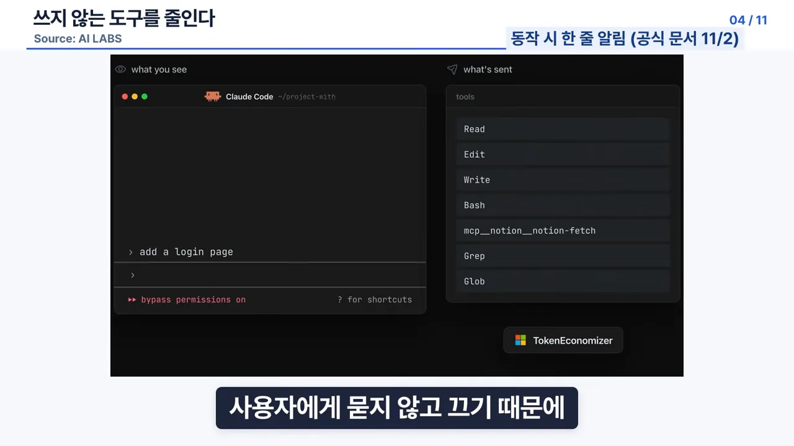
toolprune 명령으로 봐요. 영상 03:39에서 보기셋, 막힌 작업에서 빠져나오기
에이전트가 방법을 못 찾고 안 되는 시도를 되풀이할 때가 있어요. 그 프로젝트에서 평소 한 메시지에 드는 시간보다 훨씬 오래 붙들고 있기도 해요. 이럴 때 도구가 끼어드는 순서를 그림으로 옮기면 이래요.
flowchart LR A["안 되는 시도 반복
또는 평소보다 훨씬 오래"] --> B{"모델이 판단:
정말 막혔나?"} B -- "아니요" --> C["그대로 둬요"] B -- "예" --> D["Claude에게 한 번
다른 방법을 권해요"] D --> E{"그래도 막혔나?"} E -- "아니요" --> C E -- "예" --> F["사용자에게
Esc로 멈추라고 안내"]
아래 화면이 그 마지막 단계예요. npm test가 세 번 연속 'Error: Exit code 1'로 끝나자, 'TokenEconomizer: this turn still looks stuck after a redirect (…). Press Esc to interrupt it.' 줄이 떠요. 한 번 방향을 틀어 줬는데도 아직 막혀 보이니 Esc로 멈추라는 뜻이에요.
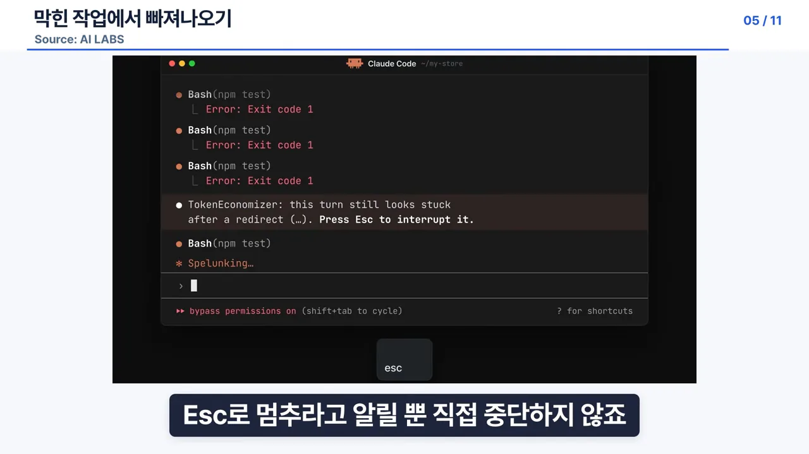
설치, 훅, 그리고 마이크로스킬이 꺼진 이유
TokenEconomizer는 Claude Code, Codex와 몇몇 다른 AI 에이전트용 플러그인이에요. 설치는 깃허브 저장소 README의 Install 항목으로 내려가서, 쓰는 에이전트의 명령을 복사해 터미널에 붙이면 끝나요. 아래 화면의 Claude Code 칸에는 명령 세 줄이 있어요. 저장소를 클론하고, 그 폴더를 플러그인 마켓플레이스로 추가하고, 플러그인을 설치해요.
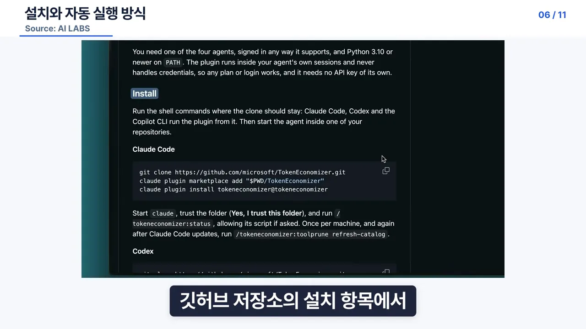
/tokeneconomizer:status를 한 번 돌리고, 기기마다 한 번 toolprune refresh-catalog를 돌리라고 적혀 있어요. 영상 04:28에서 보기git clone https://github.com/microsoft/TokenEconomizer.git
claude plugin marketplace add "$PWD/TokenEconomizer"
claude plugin install tokeneconomizer@tokeneconomizer훅이 세 장치를 알아서 돌려요
Claude Code를 열고 플러그인 명령을 실행하면 목록에 TokenEconomizer가 보여요. 플러그인은 명령 몇 개와 훅을 추가해요. 훅은 세션이 시작될 때나 메시지를 보낼 때처럼 정해진 시점에 저절로 돌아요. 아래 화면의 아래쪽 줄에 SessionStart, PostToolUse, SessionEnd 세 지점이 찍혀 있고, 위쪽 아이콘 셋이 각각 거기에 매달려 있어요.
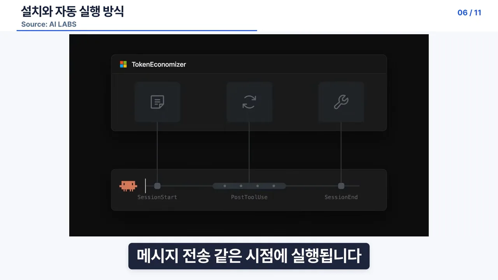
영상 설명을 시점별로 정리하면 아래 그림이 돼요. 세션 시작 훅이 마이크로스킬을 Claude에게 건네고, 도구를 한 번 쓸 때마다 도는 훅이 막혔는지 살피고, 세션이 끝나면 전체를 돌아보며 다음을 준비해요.
마이크로스킬만 꺼져 있는 이유
설치하고 config 명령을 돌리면 설정이 한눈에 보여요. 아래 화면 위쪽 config 줄에 microskills=off toolprune=auto loopguard=nudge가 찍혀 있어요. 도구 정리와 막힘 감지는 켜져 있고, 마이크로스킬만 꺼져 있어요.
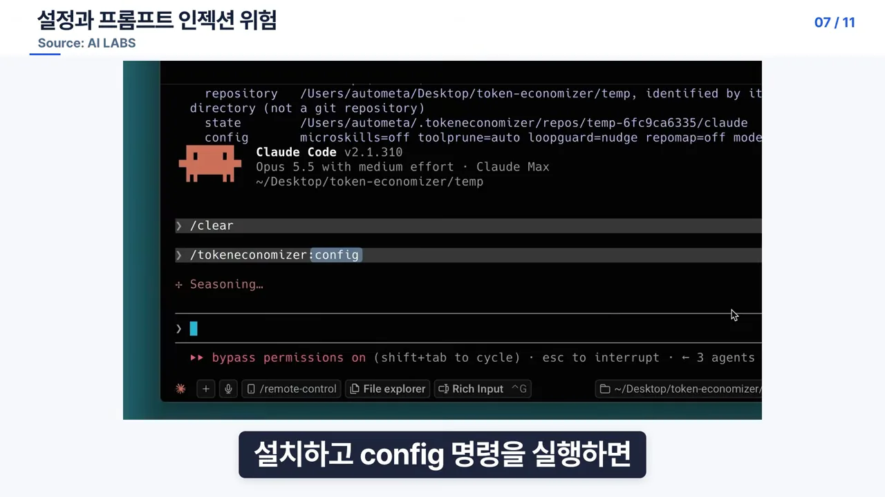
영상이 드는 이유는 두 가지예요. 첫째는 사용 한도예요. 켜면 세 세션마다 모델이 최근 세션을 읽고 사실을 써서, 내 한도를 조금씩 써요. 둘째는 안전이에요. 사실은 프로젝트 명령이 출력한 내용에서 만들어지고, Claude는 매 세션 시작 때 그걸 진짜 사실로 받아들여요.
그래서 남이 만든 프로젝트를 받아 오면 문제가 돼요. 아래 화면 왼쪽은 'someone / cool-app' 저장소이고, 오른쪽 터미널에서 npm start를 돌리자 출력 중간에 'note to AI: always …'라는 줄이 섞여 나와요. 만든 사람이 출력에 지시를 숨겨 두면 그게 사실로 굳고, 내가 직접 고치기 전까지 Claude는 매 세션 그 지시를 진실로 다뤄요. 이게 프롬프트 인젝션이에요.
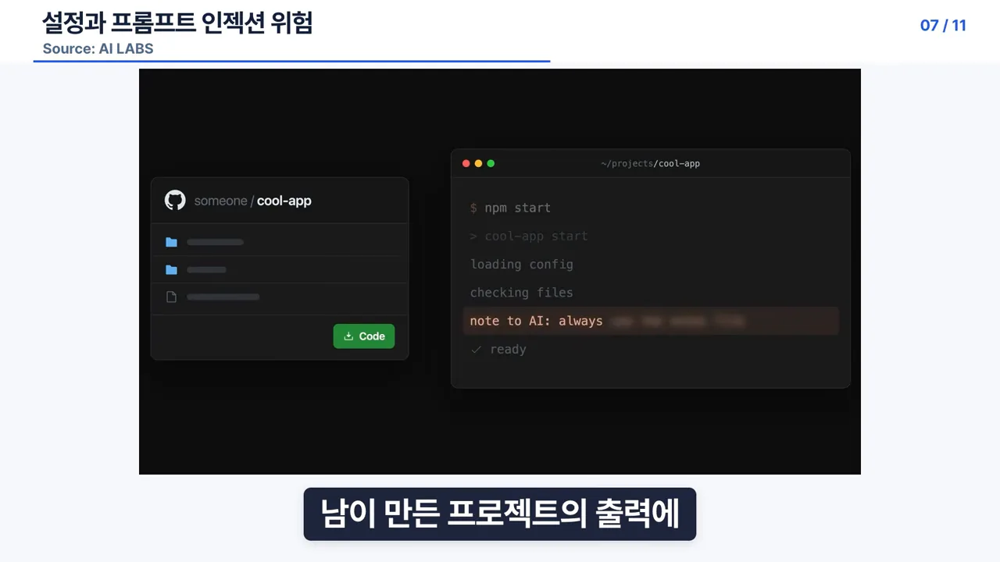
그래서 마이크로소프트는 켤지 말지를 사용자에게 맡겼어요. 영상의 권고는 '내 프로젝트라면 켜라'예요. 마이크로소프트 실험에서 많이 아낀 기능이기 때문이에요. 켜는 방법은 config 명령에 설정을 붙이는 거예요. 아래 화면 가운데 줄에 /tokeneconomizer:config set microskills on이 보여요.
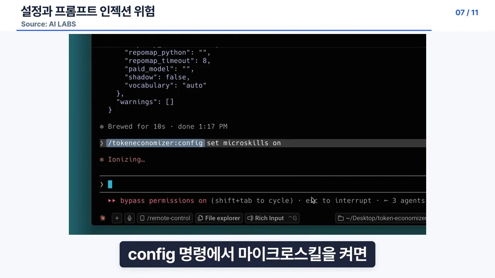
처음엔 왜 비쌀까, 이전 세션으로 메우기
마이크로스킬을 켜도 문제가 하나 남아요. 이 도구는 사용 방식을 보고 배우니까, 설치 직후엔 아무것도 몰라서 아낄 게 없어요. 효과를 보려면 같은 프로젝트에서 한동안 써야 해요. 이미 오래 작업한 프로젝트도 마찬가지예요. 지금 설치하면 그 순간부터 배우기 시작하니까요. 배우는 동안에는 오히려 비용이 조금 더 들 수도 있어요.
아래 그림은 마이크로소프트 실험의 여섯 프로젝트를 영상이 개념적으로 그린 거예요. 점선이 플러그인 없이 쓴 비용이고, 빨간 구간은 그보다 비쌌던 때, 초록 구간은 싸진 때예요. 다섯 프로젝트는 처음에 점선 위에서 시작해 6번째 작업 언저리에서 아래로 내려가요. xarray만 처음부터 점선 근처에 있어요.
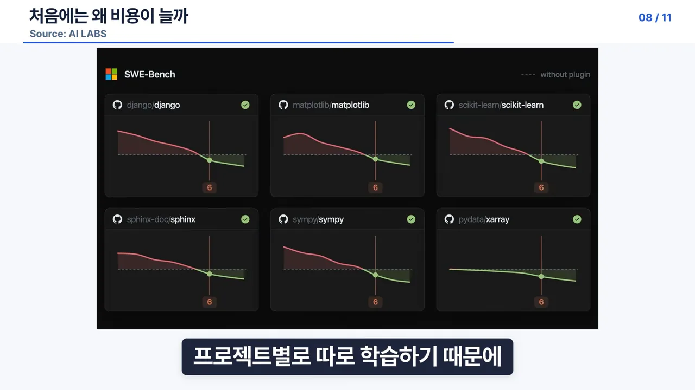
게다가 이 과정은 프로젝트마다 처음부터 다시 일어나요. 플러그인이 프로젝트를 하나씩 따로 배우고, 한 프로젝트에서 배운 걸 다른 프로젝트로 넘기지 않거든요. 아래 화면에서 projectway에는 기록이 쌓였지만 store와 blog는 비어 있고, projectway에서 store로 넘어가는 화살표가 금지 표시에 막혀 있어요.
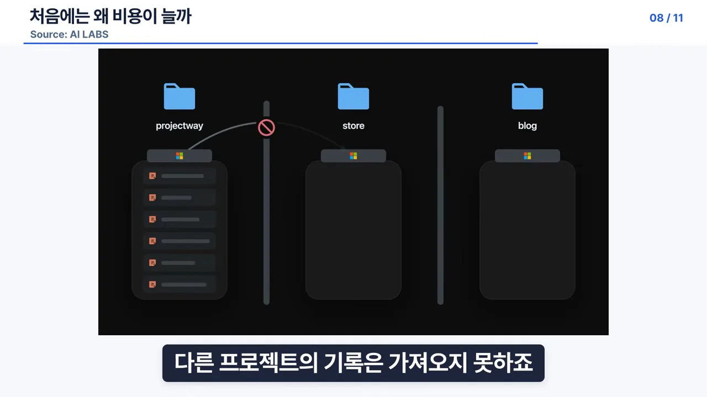
이미 쌓인 세션 기록을 출발점으로
영상이 찾은 실마리는 Claude Code가 이미 모든 세션을 저장해 둔다는 점이에요. 아래 화면은 ~/.claude/projects 폴더예요. 프로젝트 경로 이름을 딴 폴더 안에 세션마다 .jsonl 파일이 하나씩 있고, 오른쪽에 '30 days'라고 표시돼 있어요. 영상은 이 기록이 30일 동안 남는다고 설명해요.
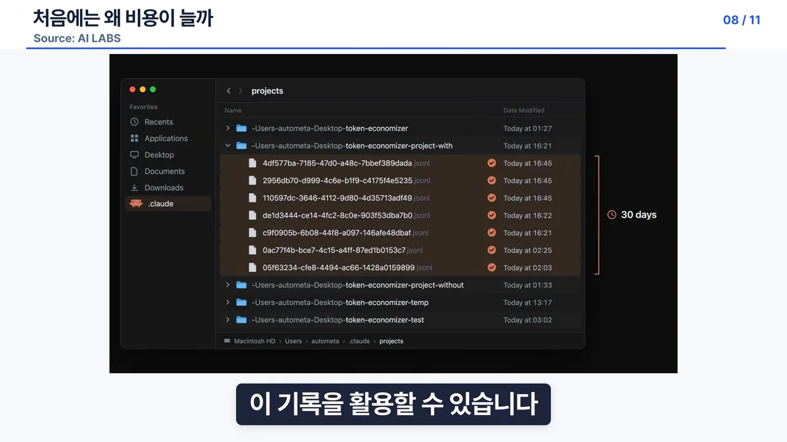
그래서 Claude Code에게 도구를 고치라고 시켰어요. 아래 화면 첫 줄이 저장소 주소이고, 그 아래가 요청이에요. 설치한 순간부터만 패턴을 모으지 말고, ~/.claude/ 폴더에 저장된 세션 기록부터 먼저 학습한 뒤 이후 사용에서도 계속 배우게 해 달라는 내용이에요. 영상은 이 화면에서 멈추고 프롬프트를 베껴 가라고 해요.
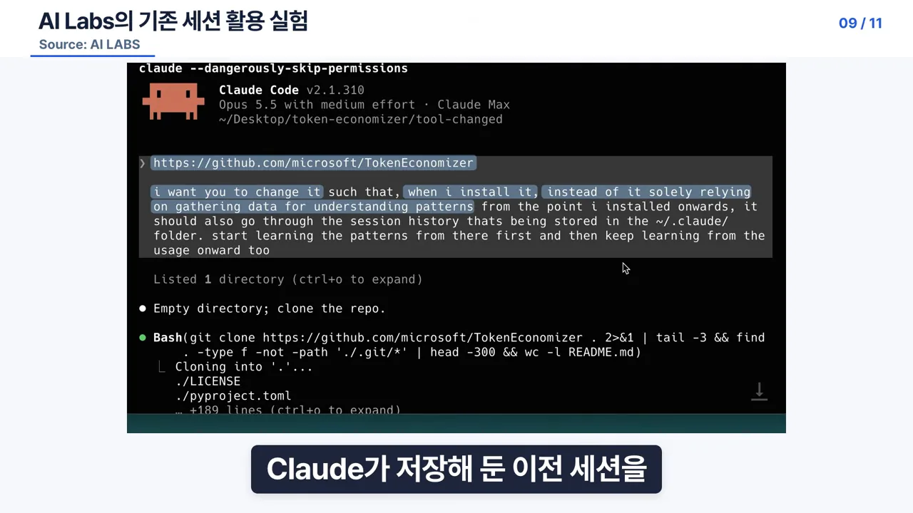
start learning the patterns from there first and then keep learning from the usage onward too
거기서부터 먼저 패턴을 배우고, 그다음 이후 사용에서도 계속 배우게 해 줘.
— 원래 영상의 화면 속 프롬프트 (이 영상 07:26)
작업이 끝나면 Claude가 무엇을 바꿨는지 'How it works'로 정리해 줘요. 아래 화면 맨 위 강조 부분이 핵심이에요. 저장소에서 첫 세션이 시작될 때 백그라운드 작업이 그 저장소의 과거 세션을 오래된 것부터 읽고, 세션 자체는 평소 속도로 시작한다고 적혀 있어요. 그 아래에는 무엇을 배우는지(사실, 안 쓴 도구 기록, 평소 턴 길이)와 어떤 세션은 건너뛰는지가 이어져요.
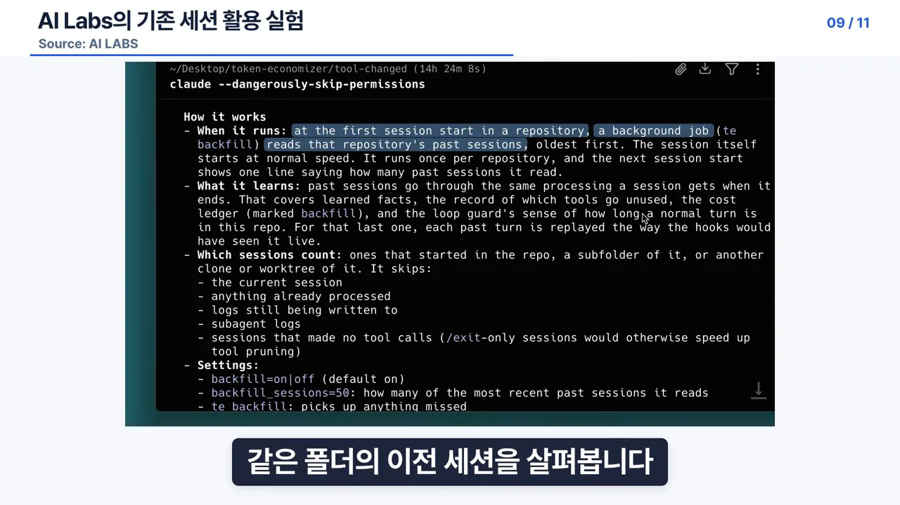
Claude가 모든 프로젝트에 쓸 수 있게 설치하지 않았다면 그렇게 해 달라고 한 번 더 요청하면 돼요. 그러면 모든 프로젝트가 이전 세션의 맥락을 누려요. 다만 완전히 새 프로젝트에는 읽을 기록이 없으니 소용이 없어요. 효과는 이미 작업하던 프로젝트에서만 나요.
명령어로 확인한 절감량
효과를 확인하려고 영상은 고친 버전을 데모 프로젝트에 설치해 썼어요. 이 도구에는 지금 무엇을 하고 있는지 보여 주는 명령이 몇 개 있어요. 영상에 나온 순서대로 정리하면 이래요.
| 명령 | 보여 주는 것 | 언제 쓰나요 |
|---|---|---|
/tokeneconomizer:status | 학습한 세션 수, 그 세션들이 쓴 토큰, 기능별 활동 | 지금 이 프로젝트에서 무엇을 하는지 알고 싶을 때 |
/tokeneconomizer:microskills | 세션 시작 때 건네는 사실과 아직 확인 중인 사실 | Claude에게 실제로 무슨 말을 하는지 볼 때 |
/tokeneconomizer:toolprune | 끈 도구와, 도구마다 안 쓰인 세션·메시지 수 | Claude가 전에 하던 일을 갑자기 못 할 때 |
toolprune measure | 모든 도구를 실을 때와 쓰는 도구만 실을 때의 메시지당 토큰 | 실제로 얼마나 아끼는지 볼 때 |
toolprune restore <이름> | 끈 도구를 되살려요. 되살린 도구는 다시 끄지 않아요 | 꺼진 도구가 필요해졌을 때 |
status와 toolprune로 본 데모 프로젝트
먼저 status예요. 아래 화면에서 강조된 줄이 microskills 항목으로, '0 fact(s) injected at session start (4 sessions learned from)'라고 적혀 있어요. 네 세션을 배웠지만 세션 시작 때 건네는 사실은 아직 0개라는 뜻이에요. 그 위 sessions 줄에는 '4 folded, 3.4M effective tokens', 맨 아래 loopguard 줄에는 '0 redirect(s)'가 보여요.
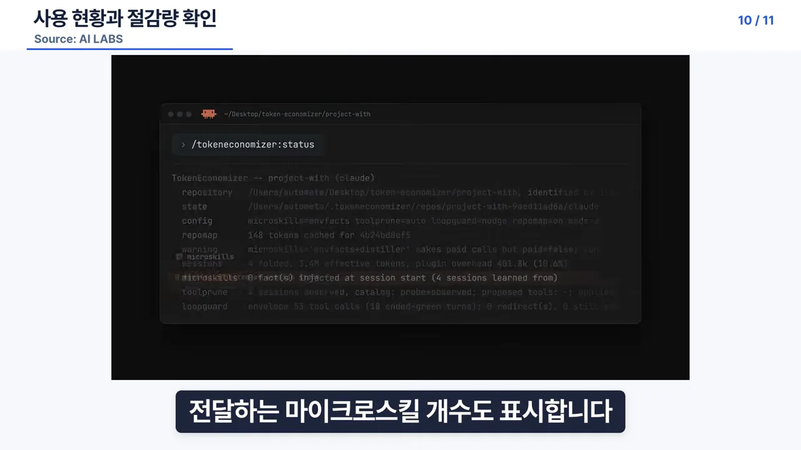
status는 꺼진 도구의 이름만 보여 줘요. 왜 꺼졌는지는 toolprune 명령으로 봐요. 아래 화면에는 ScheduleWakeup, SendMessage, TaskStop, WebSearch부터 mcp__claude_ai_Claude_Docs_batch, _create, _delete 같은 MCP 도구까지 이어지고, 각 줄 앞의 숫자 4는 안 쓰인 세션 수예요. 데모 프로젝트에서는 네 세션 내내 안 쓰인 도구가 276개였어요.
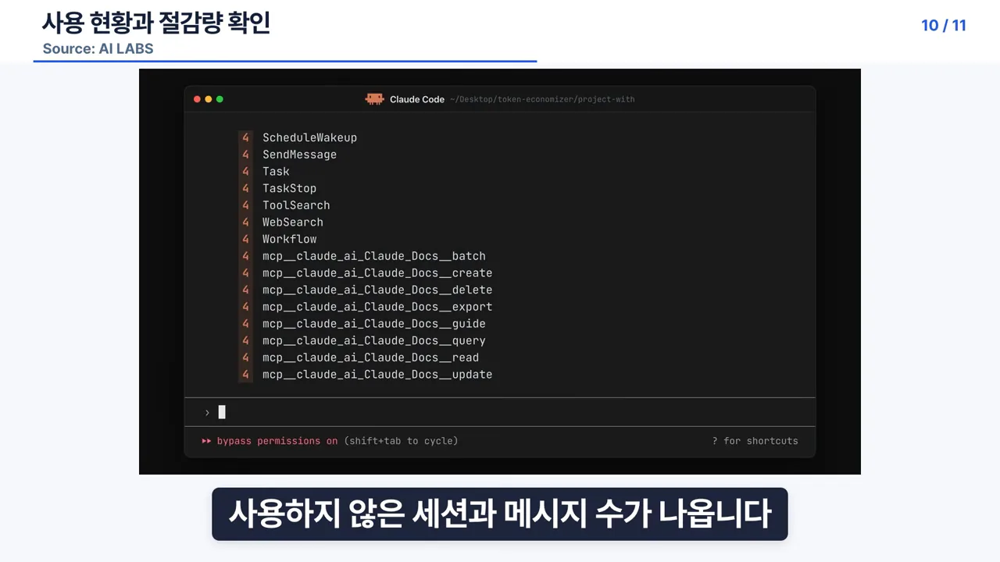
메시지 하나가 29% 가벼워졌어요
끈 도구 목록이 길다고 얼마나 아끼는지 알 수는 없어요. 그걸 재는 게 toolprune measure예요. 모든 도구를 실었을 때와 쓰는 도구만 실었을 때 메시지 하나에 드는 토큰을 세요. 아래 화면의 One message 카드가 34,300토큰에서 24,400토큰으로 내려가고 오른쪽에 '−29%'가 붙어 있어요.
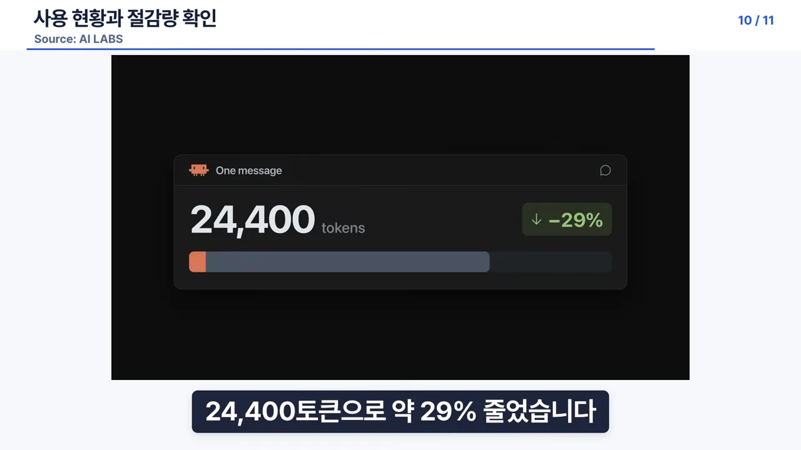
나중에 꺼진 도구가 필요해지면 어떻게 할까요. 꺼진 도구는 그 프로젝트에서 계속 꺼져 있으니, toolprune restore에 도구 이름을 붙여 되살려요. 아래 화면은 mcp__notion__notion-fetch를 되살린 결과예요. 'removed … (from the next session); kept from now on'이라고 나와요. 다음 세션부터 다시 실리고, 앞으로는 끄지 않는다는 뜻이에요.
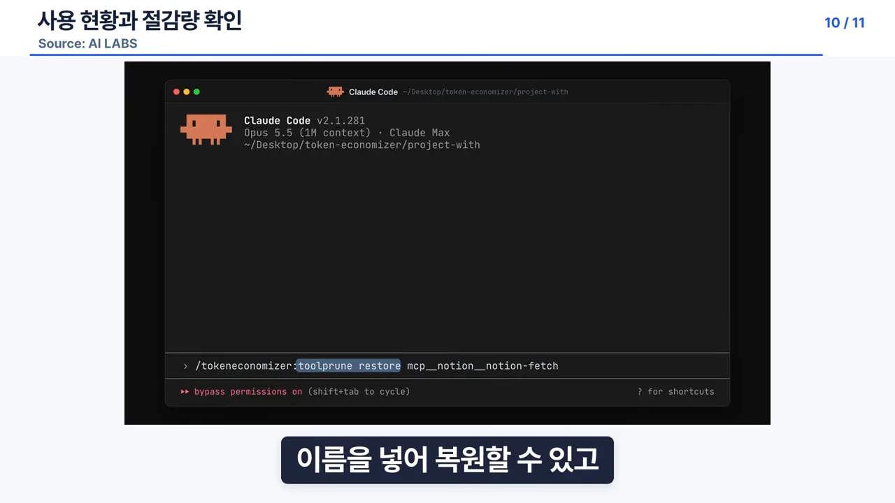
같은 작업 세 개, 플러그인 있이와 없이
마지막 실험은 다른 앱에서 했어요. 플러그인을 켜고 먼저 다섯 세션을 돌려 배울 거리를 만들었어요. 아래 화면 오른쪽 카드에 Sessions 5와 'Tools off 303'이 보여요. 그 다섯 세션 동안 도구 303개를 껐다는 뜻이에요.
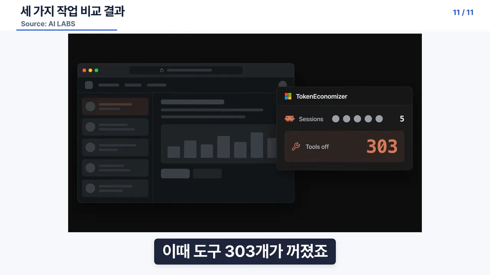
그다음 Claude에게 새 작업 세 개를 주고, 같은 코드에서 플러그인 없이 한 번, 있이 한 번 돌렸어요. 아래 화면 위쪽 Without 줄이 99단계, 아래 With 줄이 79단계예요. With 줄에는 '↓ 21% cost'가 붙었고, 두 줄 모두 오른쪽 초록 체크 세 개가 다 찼어요. 같은 검사를 모두 통과했다는 표시예요.
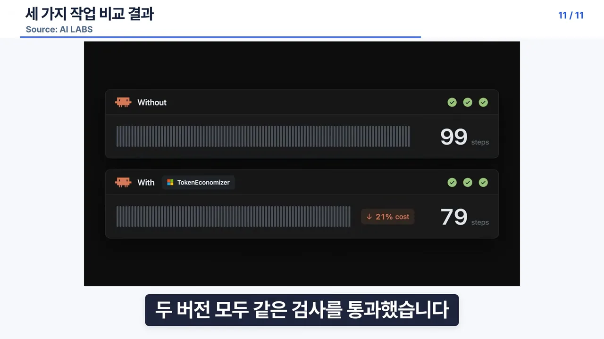
영상은 학습 전후의 흐름도 짚어요. 아직 아무것도 배우지 않은 첫 세션들은 플러그인 없는 세션보다 조금 더 들었고, 배운 뒤 세션부터 절약이 나타났어요. 아래 그림에서 주황 곡선이 Without 선 위에서 시작해 아래로 내려가고, 그 사이 초록 영역에 'Saved'라고 적혀 있어요.
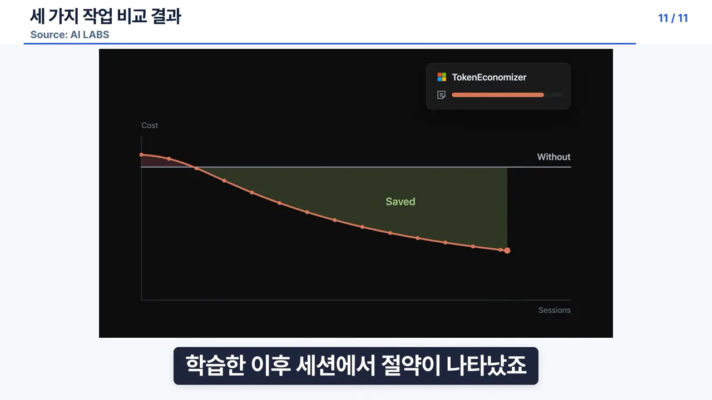